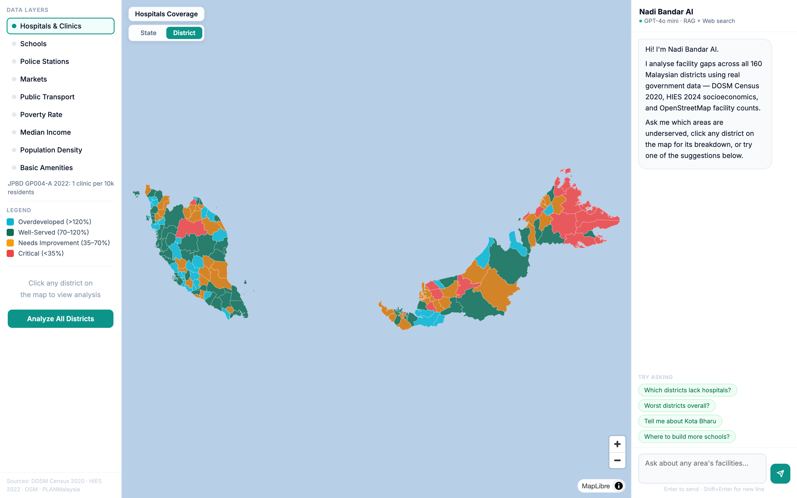
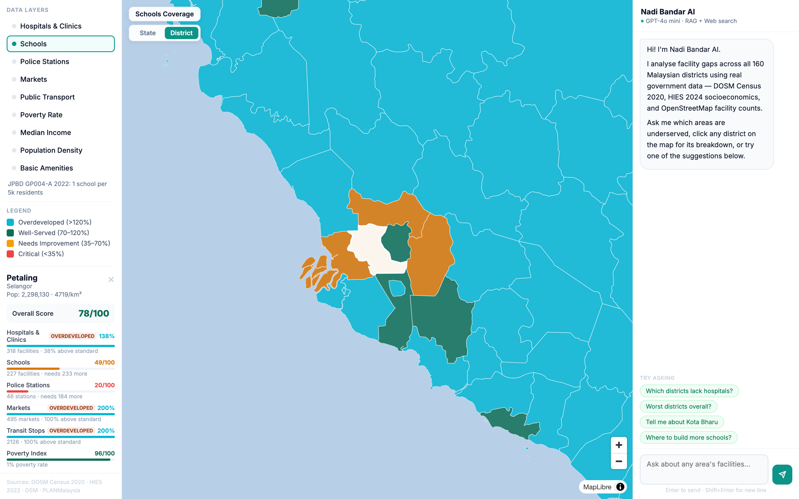
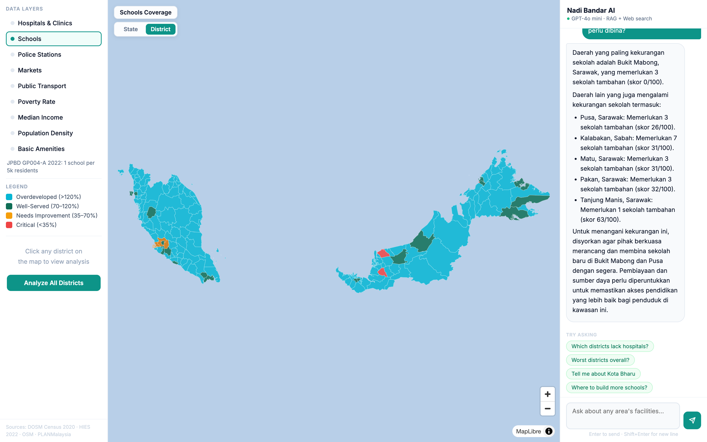

| Sumber Data |
|---|
| DOSM Banci 2020 |
| DOSM HIES 2024 |
| OpenStreetMap |
| PLANMalaysia GP004-A 2022 |
| Kemudahan | Nisbah |
|---|---|
| Hospital dan klinik | 1 : 10,000 |
| Sekolah | 1 : 5,000 |
| Balai polis | 1 : 10,000 |
| Pasar | 1 : 10,000 |
| Farmasi | 1 : 2,000 |
| Hentian pengangkutan | 1 : 5,000 |



| Daerah | Negeri | Penduduk | Skor | Jurang Ketara |
|---|---|---|---|---|
| Lahad Datu | Sabah | 229,138 | 35 | Hospital, balai polis |
| Pasir Mas | Kelantan | 230,424 | 35 | Pasar, hospital |
| Sibu | Sarawak | 248,064 | 40 | Pengangkutan awam |
| Tawau | Sabah | 372,615 | 41 | Hospital, pengangkutan |
| Perlis | Perlis | 284,885 | 47 | Pasar, hospital |